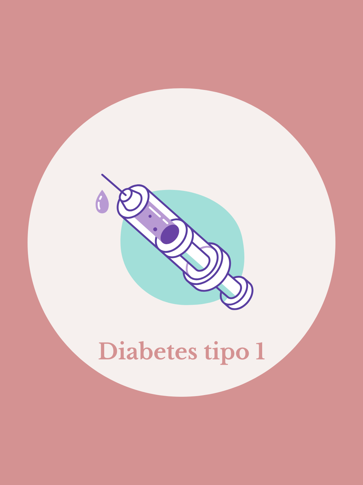
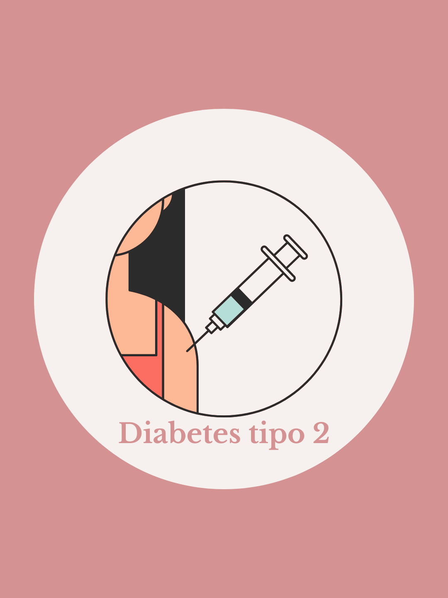

Diabetes é uma doença que ao longo dos anos está crescendo no Brasil, mas além da preocupação também podemos ver a doença com outros olhos. Na atualidade, existem inovações que cada vez mais ajudam as pessoas a conviver com diabetes de forma positiva e saudável! Você está entrando nesse mundo agora, mãezinha, e não sabe se está preparada? Fique calma. Esta plataforma foi criada com o intuito de ajudar mães e pais que descobriram a diabetes dos filhos e não sabem por qual caminho seguir. Esperamos que vocês possam encontrar o auxílio que procuram.

Diabetes tipo 1

Diabetes tipo 2
.png)
Diabetes gestacional
Ao descobrir o diagnostico de diabetes, muitos questionamentos surgem na cabeça. Essa questão se amplia quando essa situação acontece com um filho, crianças ou adolescentes que tiveram suas rotinas transformadas.
Queremos ajudar a esclarecer algumas dúvidas, para que os pais dessas crianças sejam assistidos em relação as muitas perguntas que chegam na cabeça nessa hora. Em caso de questionamentos maiores ou casos específicos, aconselha-se uma opinião médica.